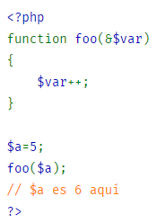
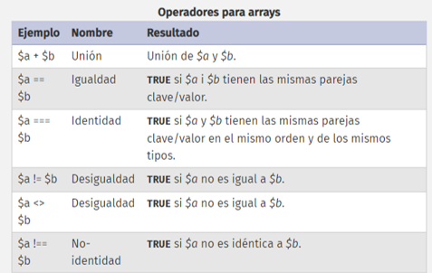
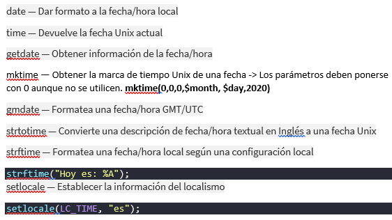
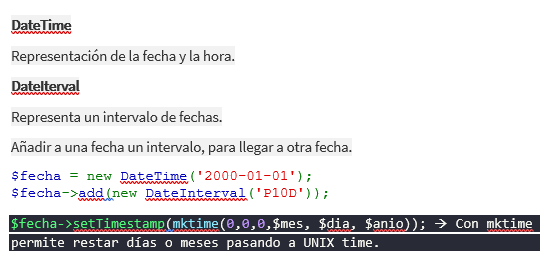

Funciones & Arrays & Fechas
Funciones
A las funciones se les pueden pasar parámetros y recogerlos de distintas formas.
- Funciones por referencia
-

Las variables pasadas guardaran el valor que obtengan dentro de la función para tenerlo fuera también.
Suma(7,8, &$resutlado); -> A partir de la versión 5 en adelante ya no funciona, por motivos de seguridad (cualquiera que llame una función puede recoger datos de ella), la referencia se pone solo en la función, no en la llamada.
- Funciones con menos o más parámetros
-
En los parámetros de la función se pueden inicializar variables, por lo tanto al llamarla se pueden pasar menos valores que parámetros, solo si los demás están inicializados: suma(7); function suma($v1,$v2=8){ echo $v2 }. Se pueden pasár más valores y no dará error: suma(7,9,9); function suma($v1,$v2){ echo $v1; }
Funciones de manejo de funciones
Arrays
Las posiciones del array no son secuenciales ya que los datos almacenados pueden ser de distintos tipos. Las posiciones en el array las establece el momento en el que se introducen los datos.
- Escalares
- Cuando el índice es numérico entero. El índice no está asociado a la posición. $var1 = array(2,3,5,7,8) ->Escalar, les da índices secuenciales;
- Asociativos
- Lo que contiene se asocia a una palabra que colocamos como índice, ej: Super-globales. También puede manejar variables de distinto tipo. $var1 = array(2=>’s’,3=>4,5=>’b’) ->Asociativa, se le da un índice y valor a este.
Si se combina escalar con asociativo, se da índice escalar hasta que llega al asociativo, el siguiente a ese es el número mayor que el asociativo.
Funciones de arraysFunciones interesantes de strings:
Funciones de stringsstr_split($frase); -> Convierte un string en array.
substr($num1, $v1+1); -> Dividir una cadena desde esa pos y todo derecha
strpos($num1, " "); -> Encontrar primera coincidencia desde izq.
strrpos($num1, " ");-> Encontrar primera coincidencia desde drch.
Nl2br()-> Hace saltos de línea después de cada string. Convirtiendo
/r/n en
preg_replace("/([!,.])/", "", $word) — Realiza una búsqueda y sustitución de una expresión regular.
str_replace — Reemplaza todas las apariciones del string buscado con el string de reemplazo (sin expresiones regulares).
printf() -- Se necesita la etiqueta html <pre> printf("%'*".$num_ast."s%".$espacio_num."u\n","",$valor);
Arrays Bidimensionales
$arr[][]; -> Posición por defecto 0,0. $arr[][]; -> Posición 1,0. Si se pone [0][] es posición 0,1. *Prevalece filas, pero si establecemos fila se prevalece columna. Al recorrer los arrays bidimensionales se hace con doble foreach, uno para filas y otros para columnas.
Formularios
Dentro de formularios, en elementos de selección multiple, se pueden usar arrays para pasar sus valores. En el name del elemento se pone ‘nomArray[]’. Los índices serán escalares, pero se pueden poner asociativos.
Saber que método de envío se utiliza. $_SERVER['REQUEST_METHOD']
Datos por URL
$_SERVER['QUERY_STRING'] Si existe, la cadena de la consulta de la petición de la página.
Parse_str($_SERVER['QUERY_STRING']); -> divide el string en las variables. Devuelve void, las variables ya las crea el, se llaman igual que en la URL.
Urlencode()-> Codificar URL.
Urldecode()-> Decodificar URL.
header — Enviar encabezado sin formato HTTP
header("refresh:1; url=ejercicio19.php?crono=$crono&start=Start");
header("Location: http://www.example.com/");
Fecha/Hora
Funciones de Fecha/Hora

Funciones de Calendario
cal_days_in_month — Devolver el número de días de un mes para un año y un calendario dados